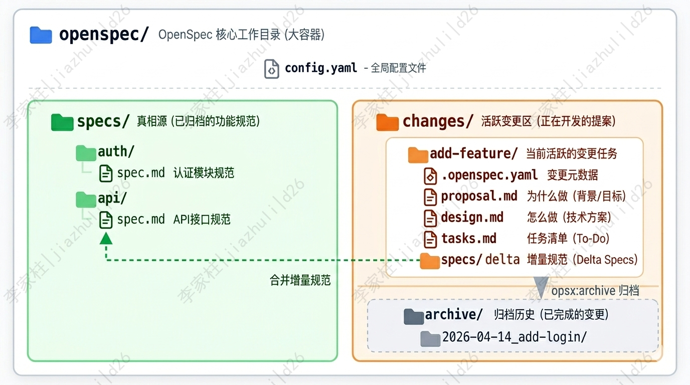

🧠 Vibe Coding 的痛点和 Spec-Driven Development 的优势
现在用 Cursor、Claude Code 这类 AI 编码助手已经是日常了。大家应该都有一个共同感受：AI 确实能写代码，但要让它持续、稳定地写出你想要的东西，没那么容易。 理想状态下，我们希望自己的角色能逐步转变——从纯粹的“代码执行者”，更多地转向“指挥者”和“把关人”：AI 负责具体的代码产出，人负责架构决策、逻辑审批和质量把关。 听起来很美好，对吧？但现实往往很骨感。如果在实际操作中缺乏规范，这种协作很容易退化成一种非常随意的状态，也就是现在常说的 “Vibe coding”（凭感觉编程）——脚踩西瓜皮，想到哪写到哪。人边想边写，AI 边猜边生成。这种缺乏约束的开发方式，很快就会暴露出几个致命痛点：
| 痛点 | 具体表现 | 后果 |
|---|---|---|
| 上下文丢失 | 聊天记录太长，AI 开始"失忆" | 反复解释同一件事，心智负担重 |
| AI 自由发挥 | 没有明确约束，AI 按自己的喜好补全 | 代码风格混乱，逻辑容易跑偏 |
| 需求偏移 | 边聊边做，缺乏锚点，做着做着就变形了 | 频繁返工、疯狂 debug |
| 无法追溯 | 只有最终代码，不知道当初为什么这么设计 | 维护和交接都很困难 |
（Spec-Driven Development，规范驱动开发）的核心思想很简单：先写规范，再写代码，用规范约束 AI 的行为边界。
更具体地说，两者的差异可以总结为下面这张表：
| 维度 | 传统 AI 编程 (Vibe Coding) | OpenSpec (SDD) |
|---|---|---|
| 核心驱动 | 基于对话和感觉 | 基于结构化规范文档 |
| 上下文管理 | 依赖聊天记录，易丢失 | 单一真相源 (Single Source of Truth) |
| 可追溯性 | 难以审计变更原因 | 完整的提案与决策日志 |
| 执行精度 | AI 自由发挥空间大 | 严格按任务清单 (Tasks) 执行 |
用一个比喻来说：传统的 AI 编程像是"口头协议"——你说一句，AI 做一句，做完就忘；而 SDD 像是"签合同"——先把需求、设计、任务清单白纸黑字写下来，AI 严格按合同执行，执行完还要归档备查 。
🏗️ OpenSpec 的核心定位与设计哲学
📖 OpenSpec是什么
OpenSpec 是由 Fission-AI 开源的一套 Spec-Driven Development 框架 + CLI 工具。它形态非常轻量，它通过一套结构化的文件组织方式和指令系统，让 AI 编程助手（如 Codex、CodeBuddy、Claude）能够在明确的"合同"约束下工作。
- 一组本地 Markdown 文档（
openspec/specs/与openspec/changes/）。 - 一组斜杠命令（
/opsx:propose、/opsx:apply、/opsx:archive）。 - 一个 npm 包：
@fission-ai/openspec。
和 Spec Kit 相比，OpenSpec 没有"Constitution 强制条款"那一层；和 Kiro 相比，OpenSpec 不绑定特定 IDE。一句话——它只做"把变更规格化"这一件事，并把这件事做到极致轻量。
🎯 核心口号：Align before code
OpenSpec 的官方口号是 “Align before code”（在写代码之前先对齐）。它强调的是：
- 需求是合约，不是注释。
- 规范是 AI 的上下文，不是给人看的文档。
- 变更必须可追溯、可审计、可回放。
整个工具的设计都围绕这一句话展开——所有功能都为了把"模糊意图"压缩成"AI 能直接消费的契约"。
⚖️ 与其他 SDD 工具的对比
| 维度 | OpenSpec | GitHub Spec Kit | AWS Kiro |
|---|---|---|---|
| 形态 | 本地 CLI + Markdown | Python CLI + Markdown | IDE 内置（基于 Code OSS） |
| 工作流 | propose → apply → archive | specify → plan → tasks → implement | requirements → design → tasks |
| 产物 | proposal / design / specs / tasks | spec / plan / tasks / constitution | requirements / design / tasks |
| 强项 | 增量变更、归档 | 完整宪法、跨工具兼容 | IDE 原生、EARS 格式、Agent Hooks |
| 弱项 | 无项目级强制条款 | 流程相对重 | 绑死 IDE、生态封闭 |
| 适合 | 增量功能、长期维护 | 团队级、企业级 | 多人协作、复杂项目 |
一句话选型：想轻、想快、想要变更可追溯，用 OpenSpec；想严肃、想统一、想给 AI 立宪法，用 Spec Kit；想 IDE 全家桶、用 Kiro。
🛠️ OpenSpec 的安装和使用
环境要求:OpenSpec 基于 Node.js 开发，安装前请确保你的环境满足：Node.js：版本 >= 20.19
|
|
🧩 OpenSpec 工作目录
🗂️ 整体结构
这是理解 OpenSpec 的关键部分。用下面这张图来展示整体架构：

|
|
用一张表把这三个区域的分工与状态总结一下：
| 区域 | 路径 | 作用 | 状态 |
|---|---|---|---|
| 真相源 | specs/ |
存放已归档、稳定的功能规范 | 🟢 稳定 |
| 活跃变更区 | changes/xxx/ |
正在开发的功能提案 | 🟠 活跃 |
| 归档区 | changes/archive/ |
已完成变更的历史记录 | ⚪ 历史 |
这一设计借鉴了传统软件工程里的"主干 + 变更集“思想：
specs/是已经定稿的规范库，是 AI 读"系统当前是什么"的入口。changes/是正在进行的"草稿区”，每一个子目录代表一个待合并的变更。
新功能先在 changes/ 里起草，完工后通过 /opsx:archive 合并到 specs/，整个生命周期都有完整的文件留痕。
🧾 核心工件
在 OpenSpec 工作流的语境中，Artifact（工件）是指在一个变更（Change）推进过程中，按步骤依次创建的结构化文档或文件。
每个变更包含 四个核心工件，我把它们比作"合同的四个章节"：四个文件各司其职：
| 工件 | 文件 | 回答的问题 | 谁来读 |
|---|---|---|---|
| 提案 | proposal.md |
为什么要做？影响哪些模块？ | 人 + AI |
| 设计 | design.md |
用什么技术方案？关键决策是什么？ | 人 + AI |
| 规范 | specs/*.md |
具体怎么做 | AI 实现时对齐 |
| 任务 | tasks.md |
具体要做哪些事？ | AI 实施时逐项打勾 |
一个常见的反模式是把
proposal.md写得很长、spec.md写得很短。事实上spec.md才是 AI 实现时的"事实来源"——它写得越具体，AI 跑偏的概率越低。
➕ 变更的"delta"思想
specs/ 下的子目录是按"能力（capability）“组织的，例如 auth/spec.md、billing/spec.md。一次新变更只会产生"差异（delta）"——只描述**新增（ADDED）、修改（MODIFIED）、删除（REMOVED）**的能力，不重写整个文件。
|
|
归档时 OpenSpec 会自动把这些 delta 合并到 openspec/specs/auth/spec.md，形成活文档。这样既保留了变更历史，又让 specs/ 始终是当前系统的真实写照。
🔄 核心工作流：Propose → Apply → Archive
⌨️ 三个核心命令
OpenSpec 默认是 Core 模式，只有三个核心命令：
|
|
/opsx:propose <name>：根据自然语言需求，一键生成proposal.md+design.md+specs/+tasks.md。/opsx:apply：按tasks.md逐项实现，每完成一项打勾。/opsx:archive <name>：把变更归档，delta 合并到specs/，整个目录从changes/移除。
三个命令的边界极其清楚：
propose阶段只动 Markdown，不动代码。apply阶段才真正写代码。archive阶段关闭变更，留下审计痕迹。
🔍 探索模式 /opsx:explore
需求不清时还有 /opsx:explore 兜底。它和 propose 的区别是：
propose会生成正式文档。explore不产生产物，只和 AI 一起梳理思路，把模糊意图问清楚。
实操经验：拿到一个不清晰的需求时，先
/opsx:explore把问题问透；等需求清晰、边界明确后，再/opsx:propose生成正式规范。避免边探索边写规范，导致 spec 反复返工。
🪞 完整生命周期
一个 OpenSpec 变更的完整生命周期是这样的：
|
|
这个流程里有两个**人在环路（Human-in-the-Loop）**的检查点：
propose之后必须 review 规范。archive之前必须验证实现。
跳过任何一个检查点，OpenSpec 就退化为"自动写代码的脚手架”，失去意义。
💻 安装与初始化
📦 前置要求
OpenSpec 的安装门槛非常低：
- Node.js 18+
- 任意一个支持的 AI 工具（Claude Code、Cursor、Codex、Copilot、Windsurf、Gemini CLI、Cline、Trae 等 25+ 工具）
⚙️ 项目初始化
在项目根目录运行：
|
|
openspec init 会做三件事：
- 创建
openspec/目录。 - 在所选 AI 工具的配置目录（如
.claude/commands/opsx/）写入斜杠命令定义。 - 生成一份默认的
AGENTS.md提示词（告诉 AI 如何使用 OpenSpec）。
提示：如果想用非交互式初始化，可以直接指定工具：
openspec init --tools claude。
🎛️ 切换工作模式
OpenSpec 提供两种工作模式：
- Core 模式（默认）：3 个核心命令够用，适合大多数项目。
- Expanded 模式：解锁更多细粒度命令（
/opsx:new、/opsx:continue、/opsx:ff、/opsx:verify、/opsx:bulk-archive、/opsx:onboard）。
切换方法：
|
|
经验之谈：除非项目特别复杂，否则 Core 模式完全够用。命令越多，记忆负担越大，反而拖慢节奏。
🧪 基本使用：一个最小例子
下面用一个最小例子把整套流程跑通。需求是"做一个 CLI 工具，能把文本按行编号输出"。
💡 需求描述
在 Claude Code 对话框里输入：
帮我用 OpenSpec 写一个 CLI 工具，名字叫
linenumber，支持读取文件路径参数，把每一行加上行号后输出到标准输出。要求：空行也要编号；如果不传文件参数，从 stdin 读取。
📋 Step 1：发起提案
|
|
OpenSpec 会在 openspec/changes/linenumber/ 下生成四个文件。其中 tasks.md 大致长这样：
|
|
specs/cli/linenumber/spec.md 会长这样（节选）：
|
|
关键动作：在这个阶段，仔细 review 每一个 Scenario。如果验收条件不严密，AI 在 apply 阶段就会跑偏。
🔧 Step 2：执行实现
|
|
AI 会按 tasks.md 逐项推进，每完成一项就勾掉一项。期间你也可以随时打断，要求它重写或调整。
如果你有 TDD 习惯，可以叠加 Superpowers 的 test-driven-development 技能：
|
|
它会强制 AI 走"红-绿-重构"循环，先写失败测试，再写最小实现。
🗃️ Step 3：归档变更
实现完成、测试通过后：
|
|
OpenSpec 会自动：
- 把
changes/linenumber/specs/cli/linenumber/spec.md中的 ADDED Requirements 合并到openspec/specs/cli/linenumber/spec.md。 - 删除
openspec/changes/linenumber/目录。 - 留下一条归档记录，方便日后回溯。
此时 openspec/specs/ 就成了这个 CLI 工具的活文档——任何人 onboarding 都可以直接读 spec.md 了解这个工具的全部行为。
📚 命令速查表
| 命令 | 阶段 | 作用 | 是否动代码 |
|---|---|---|---|
openspec init |
初始化 | 初始化 OpenSpec，写入 AI 工具命令 | ✗ |
openspec config profile |
配置 | 查看/切换工作模式 | ✗ |
openspec update |
配置 | 让 AI 重新识别命令 | ✗ |
/opsx:explore |
设计前 | 与 AI 梳理思路，不产生产物 | ✗ |
/opsx:propose <name> |
设计 | 生成 proposal / design / specs / tasks | ✗ |
/opsx:apply |
实施 | 按 tasks.md 逐项实现 | ✓ |
/opsx:archive <name> |
归档 | 合并 delta 到 specs/，删除变更目录 | ✗ |
/opsx:bulk-archive |
归档 | 一次性归档多个已完成变更 | ✗ |
/opsx:onboard |
学习 | 把现有代码反向生成 specs/ 草稿 | ✗ |
/opsx:ff |
实施 | Fast Forward，跳过部分审批 | ✓ |
/opsx:verify |
验证 | 让 AI 自检当前实现是否符合 spec | ✗ |
表中
openspec前缀的是 CLI 命令（在终端跑），/opsx:前缀的是 Skill 命令（在 AI 对话框里跑）。别把它们搞混。
⚠️ 适用场景与局限
✅ 适合用 OpenSpec 的场景
- 长期维护的项目：规范合并到
specs/后就是活文档，新成员 onboarding 直接读 spec 即可。 - 需要审计的变更：每次新功能都有完整的
proposal.md+specs/+tasks.md留痕。 - 多 Agent 协作：把 OpenSpec 仓库和任务交给多个 AI 工具，它们读同一份
specs/，行为是一致的。 - 跨会话延续：规范是文件系统级的，新开会话也能立刻接上——不依赖对话历史。
❌ 不适合用 OpenSpec 的场景
- 小修小补：改文案、修样式、hot fix 走完整流程反而拖慢节奏（参考 [Spec Coding 的踩坑实录](../Spec Coding的踩坑实录/index.zh-cn.md)）。
- 探索性 PoC：需求还没定型，频繁改 spec 成本太高。
- 只有一两人的小项目：维护 spec 的边际收益可能不够抵消写作成本。
- 强实时性的项目：spec 写完到代码合入有延迟，不适合需要快速响应的场景。
💎 几条经验
- propose 的输入质量决定产物质量：需求描述越具体，生成的 spec 越准；模糊的输入会产生模糊的 spec。
- apply 之前一定要 review spec：设计阶段返工成本低，实现阶段返工成本高 10 倍。
- archive 之前一定要 verify：跑测试、对照 spec 逐条勾选验收条件，别让"看起来对"变成"实际对"。
- 保持 spec 文件的精简：每个 Scenario 描述一个具体行为，不要把 spec 写成"伪代码"。
- 配合 TDD 纪律使用：OpenSpec 管"做什么"，TDD 管"做得对不对"，两者缺一不可。
📖 参考资料
- OpenSpec 官方仓库：https://github.com/Fission-AI/OpenSpec
- OpenSpec 官网：https://openspec.dev/
- GitHub Spec Kit：https://github.com/github/spec-kit
- AWS Kiro：https://kiro.dev/
- Fission-AI 组织：https://github.com/Fission-AI